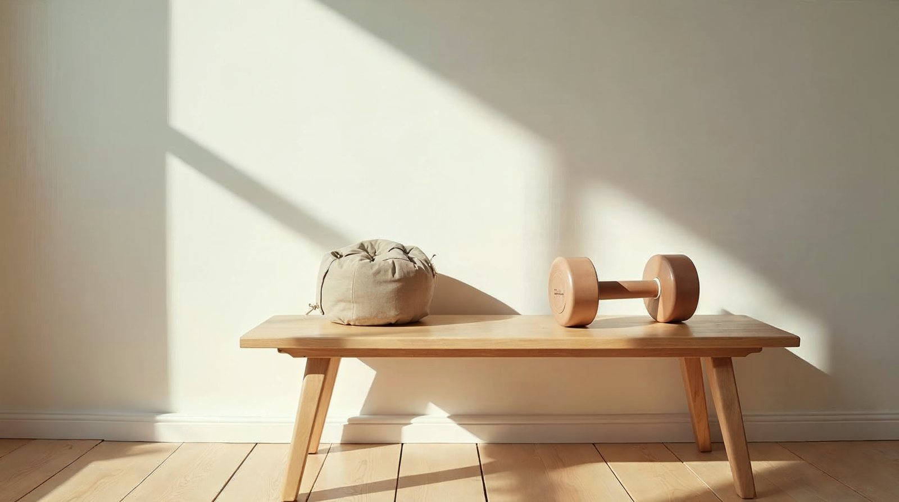
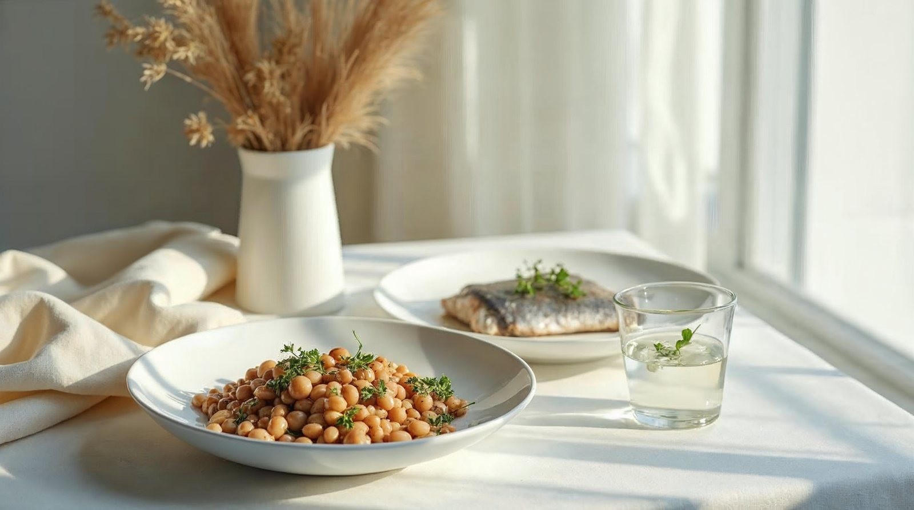
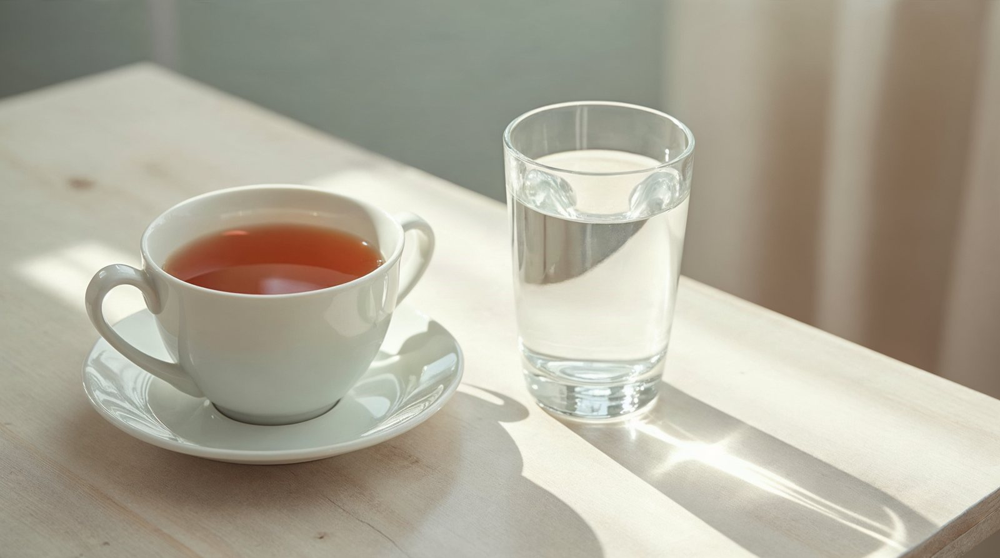

이종호 한의사 감수좋은꿈참사랑한의원 대표원장 (한의사 면허번호 19769)발행 2026-11-26 · 수정 2026-11-26
이 글의 차례
퇴근하고 현관문을 여는 순간 온몸의 힘이 빠집니다. 예전엔 주말마다 등산을 다녔는데 요즘은 소파에서 일어나기도 귀찮습니다. 바지 허리는 자꾸 끼고, 밤에는 두세 번 깨서 화장실에 갑니다. 회의 중에 별것 아닌 일에 욱하고는 혼자 머쓱해집니다. "나이 먹어서 그렇지" 하고 넘기는데, 마음 한쪽이 자꾸 쓸쓸합니다.
갱년기라고 하면 흔히 여성을 떠올리지만, 남성에게도 비슷한 변화가 찾아옵니다. 남성호르몬인 테스토스테론은 30대 이후 해마다 조금씩 줄어든다고 알려져 있습니다. 여성처럼 갑자기 떨어지지 않고 천천히 줄어서, 변화를 알아채기 어렵고 그냥 나이 탓으로 넘기기 쉽습니다.
진료실에서 남성분들은 이 이야기를 꺼내기 어려워하십니다. 피곤하다, 허리가 아프다, 잠을 못 잔다는 말로 시작해서 한참 뒤에야 "요즘 기운이 영 예전 같지 않다"고 털어놓으십니다. 저는 그 말을 가볍게 넘기지 않습니다. 몸이 보내는 변화를 차근차근 같이 정리해 보자고 말씀드립니다.
왜 남성에게도 갱년기가 올까요
테스토스테론은 근육과 뼈, 기운과 의욕, 성기능, 기분에 두루 관여하는 호르몬입니다. 나이가 들면서 이 호르몬이 서서히 줄고, 몸이 그 변화에 적응하는 과정에서 여러 증상이 나타날 수 있습니다. 이를 남성 갱년기 또는 후기 발병 남성 호르몬 결핍이라고 부르기도 합니다.
호르몬이 줄어드는 속도는 사람마다 다릅니다. 같은 나이라도 복부비만, 당뇨, 고혈압이 있거나, 잠이 부족하고 술을 자주 마시며, 스트레스가 오래 이어진 분에게서 더 낮게 나오는 경향이 있다고 알려져 있습니다. 반대로 뱃살이 늘면 호르몬이 더 줄고, 호르몬이 줄면 뱃살이 더 늘기 쉬운 고리가 생기기도 합니다.
40~50대는 생활의 무게도 큰 시기입니다. 회사에서는 책임이 커지고, 집에서는 아이 교육과 부모님 건강을 함께 챙겨야 합니다. 몸의 변화와 마음의 부담이 한꺼번에 겹치면서, 무엇이 호르몬 때문이고 무엇이 지친 탓인지 구분하기 어려워집니다.
한의학에서는 나이가 들며 허리와 무릎이 약해지고, 밤에 소변이 잦으며, 기운과 의욕이 줄어드는 모습을 신(腎)의 기운이 약해지는 흐름으로 보아 왔습니다. 그래서 피로나 성기능 하나만 보지 않고 허리, 소변, 잠, 땀, 소화를 함께 살핍니다.
남성 갱년기, 이렇게 나눠 봅니다
남성 갱년기의 증상은 크게 몸, 마음, 성기능 세 갈래로 나눠 볼 수 있습니다. 모두 함께 오기도 하고, 한쪽만 두드러지기도 합니다.
몸이 달라지는 쪽
쉽게 지치고, 쉬어도 피로가 풀리지 않습니다. 근육이 줄고 팔다리가 가늘어지는데 배는 나옵니다. 땀이 많아지거나 얼굴이 화끈 달아오르기도 하고, 밤에 자주 깨서 화장실에 갑니다. 허리와 무릎이 예전보다 쉽게 아프고, 운동을 해도 회복이 더디다고 하십니다.
마음이 달라지는 쪽
의욕이 떨어지고 무엇을 해도 재미가 없습니다. 예민해져 쉽게 화가 나거나, 반대로 축 처지고 우울해집니다. 집중이 잘 안 되고 깜빡하는 일이 늘었다는 분도 많습니다. 이 변화를 스스로도 낯설게 느끼고, 가족이 먼저 알아채기도 합니다.
성기능이 달라지는 쪽
성욕이 줄고, 아침 발기가 예전보다 줄며, 발기를 유지하기 어려워졌다는 분이 있습니다. 성기능 변화는 호르몬뿐 아니라 혈관, 당뇨, 혈압, 약, 마음의 긴장과도 얽혀 있어서, 비뇨의학과 진료로 원인을 함께 확인하는 것이 좋습니다.
다른 상태와는 이렇게 다릅니다
피로와 의욕 저하는 남성 갱년기만의 증상이 아닙니다. 갑상선 기능 저하, 빈혈, 당뇨, 수면무호흡, 우울도 비슷한 모습으로 올 수 있습니다. 고환이나 뇌하수체 쪽의 문제로 남성호르몬이 낮아지는 경우도 드물게 있어, 나이에 비해 변화가 이르거나 급하다면 비뇨의학과 확인이 더 중요해집니다.
그래서 '갱년기겠지' 하고 넘기기 전에 이런 상태가 없는지 먼저 확인하는 것이 순서입니다.
특히 코를 심하게 골고 자다가 숨이 멎는다는 말을 듣는다면 수면무호흡을 따로 살펴야 합니다. 잠이 깨지는 것만으로도 호르몬과 기운이 함께 떨어질 수 있다고 알려져 있습니다. 마음이 2주 넘게 깊이 가라앉아 있다면 우울도 함께 살펴봅니다.
남성호르몬 검사는 비뇨의학과나 내과에서 혈액 검사로 확인합니다. 호르몬은 하루 중 아침에 높게 나오는 편이라, 대개 오전에 검사하도록 안내받는 경우가 많습니다. 수치와 증상을 함께 보고 판단하므로, 검사 결과는 처방한 진료과의 설명을 따르시면 됩니다.

스스로 점검해 보세요
아래 가운데 해당하는 줄에 표시해 두셨다가 진료 때 보여 주세요. 진단을 내리려는 목록은 아닙니다.
- 쉬어도 피로가 잘 풀리지 않는다
- 의욕과 즐거움이 예전보다 크게 줄었다
- 근육이 줄고 배가 나오며 허리둘레가 늘었다
- 예민해지거나 쉽게 우울해진다
- 밤에 자주 깨고 화장실에 가는 횟수가 늘었다
- 성욕이 줄고 아침 발기가 줄었다
- 땀이 많아지거나 얼굴이 화끈 달아오른다
진료실에서 자주 듣는 걱정
"남자가 이런 걸로 병원에 가도 되나요?" 하고 멋쩍어하시는 분이 많습니다. 기운과 잠, 마음의 변화는 남녀 모두에게 소중한 몸의 신호입니다. 부끄러워할 일이 아니라 한 번쯤 짚어 볼 일입니다.
"좋다는 건강식품을 이것저것 먹고 있다"는 분도 많습니다. 여러 제품을 한꺼번에 드시면 무엇이 도움이 되었는지 알기 어렵고, 드시는 약과 겹칠 수도 있습니다. 드시는 것을 모두 적어 오시면 함께 정리해 드립니다.
먼저 이렇게 여쭙니다
진료실에서는 대략 이런 순서로 여쭙습니다. 처음부터 다 기억하지 못하셔도 괜찮습니다.
- 언제부터, 무엇이 가장 달라졌다고 느끼시나요?
- 최근 건강검진에서 혈압, 혈당, 콜레스테롤, 간 수치는 어떻게 나왔나요?
- 잠은 몇 시간, 밤에 몇 번 깨시나요? 코골이를 지적받은 적이 있나요?
- 술은 일주일에 몇 번, 한 번에 얼마나 드시나요? 담배는 피우시나요?
- 운동은 일주일에 몇 번, 무엇을 하시나요?
- 드시는 약이나 영양제가 있나요? 비뇨의학과 진료를 받은 적이 있나요?
- 요즘 회사와 집에서 마음을 많이 쓰는 일이 있나요?
검진 결과지를 꼭 함께 봅니다. 남성 갱년기는 대사의 변화와 단단히 얽혀 있어서, 혈당과 혈압, 허리둘레의 흐름이 몸 상태를 보여 주는 중요한 지도가 됩니다. 몇 해치를 함께 가져오시면 흐름을 읽기가 훨씬 쉽습니다.

일상에서 먼저 해 볼 수 있는 것
남성 갱년기의 흐름은 생활에 꽤 영향을 받는다고 알려져 있습니다. 아래에서 지금 할 수 있는 것 하나만 골라 한 달 이어 보세요.
- 일주일에 2~3번은 스쿼트, 팔굽혀펴기처럼 근육을 쓰는 운동 넣기
- 하루 30분 빠르게 걷기, 계단 이용하기
- 술은 일주일에 마시는 날을 하루씩 줄이기
- 잠자리에 드는 시각을 일정하게 하고, 6~7시간 이상 자기
- 저녁은 잠들기 3시간 전에 마치고, 늦은 야식 줄이기
- 끼니마다 고기, 생선, 달걀, 두부 같은 단백질 한 가지 챙기기
근력 운동은 남성 갱년기에서 특히 중요하게 이야기됩니다. 근육이 늘면 혈당과 체중 관리에도 보탬이 되고, 운동 뒤의 개운함이 기분에도 도움이 되는 분이 많습니다. 무릎과 허리가 약하다면 의자에 앉았다 일어서기처럼 가벼운 동작부터 시작하세요.
체중이 많이 늘었다면 천천히 줄여 보는 것도 의미가 있습니다. 허리둘레가 줄면 몸의 흐름도 함께 달라진다는 분이 많습니다. 다만 굶다시피 줄이면 근육이 함께 빠지기 쉬우니, 한 달 단위로 천천히 가는 편을 권합니다.
마음도 돌봐 주세요. 남성분들은 힘든 마음을 말로 꺼내기보다 술이나 일로 덮는 경우가 많습니다. 배우자나 친구에게 "요즘 좀 지친다"고 한마디 꺼내는 것, 혼자만의 취미 시간을 일주일에 한 번 만드는 것도 작지만 의미 있는 시작입니다.
술과 잠을 함께 봅니다
이 나이대 남성분들께 가장 자주 드리는 이야기가 술과 잠입니다. 회식과 모임으로 술이 잦으면 잠이 얕아지고, 밤중에 화장실에 자주 가며, 다음 날 기운이 더 떨어집니다. 잦은 음주는 남성호르몬과 간, 뱃살에도 부담이 된다고 알려져 있습니다.
술을 한 번에 끊기는 어렵습니다. 대신 마시는 날을 정해 두고, 그 사이에 물을 함께 마시며, 2차는 건너뛰는 것부터 시작해 보세요. 술을 줄인 주와 그렇지 않은 주의 아침 기운을 견주어 보면 몸이 먼저 차이를 알려 주는 경우가 많습니다.
잠은 몸이 호르몬을 다시 채우는 시간이기도 합니다. 늦게까지 휴대폰을 보거나 텔레비전 앞에서 졸다가 새벽에 잠자리로 옮기는 습관이 있다면, 잠자리에 드는 시각부터 일정하게 맞춰 보세요.

몸이 찬 쪽과 열이 오르는 쪽
같은 남성 갱년기라도 몸의 모습은 다릅니다. 손발과 아랫배가 차고, 허리가 시리며, 밤에 소변이 잦고, 쉽게 처지는 분이 있습니다. 이런 분은 찬 음식과 찬 맥주를 줄이고 허리와 아랫배를 따뜻하게 하는 일부터 챙깁니다.
반대로 얼굴이 자주 달아오르고, 땀이 많으며, 입이 마르고, 잠들 때 몸이 뜨거워 뒤척이는 분도 있습니다. 이런 분은 맵고 기름진 음식과 술을 먼저 줄이고, 잠자리를 너무 덥지 않게 하는 편이 맞습니다. 진찰 뒤 그 사람에게 맞는 쪽을 함께 정합니다.
가족이 함께 알아 두면 좋은 것
남성 갱년기의 변화는 본인보다 가족이 먼저 느끼는 경우가 많습니다. 예전과 달리 쉽게 화를 내거나, 말수가 줄고, 주말 내내 누워만 있는 모습에 가족도 서운해지기 쉽습니다.
이런 변화가 게으름이나 무관심이 아니라 몸과 마음의 변화일 수 있다는 것을 함께 알아 두시면 서로 덜 다칩니다. "요즘 힘들어 보여, 같이 걷자"처럼 작은 제안이 큰 도움이 되기도 합니다. 함께 진료를 받으러 오셔도 좋습니다. 가족이 본 변화를 메모해 주시면 본인이 놓친 부분을 채우는 데 큰 도움이 됩니다.
은퇴나 자녀의 독립처럼 삶의 큰 변화가 이 시기와 겹치기도 합니다. 역할이 바뀌며 허전함이 커지면 몸의 변화도 더 크게 느껴집니다. 새로 배우고 싶은 것 하나, 꾸준히 만날 사람 몇을 정해 두는 것도 몸을 돌보는 일의 한 부분입니다.
한의원에서 함께 살필 수 있는 경우
호르몬 검사와 호르몬 치료는 비뇨의학과나 내과와 상의하시는 것이 순서입니다. 한의원 진료는 그와 나란히, 생활과 몸 전체의 흐름을 함께 돌보는 쪽으로 함께하실 수 있습니다.
- 쉬어도 풀리지 않는 피로와 기운 저하가 오래가는 경우
- 잠이 얕고 밤중 소변으로 자주 깨는 경우
- 허리와 무릎이 약해지고 쉽게 지치는 경우
- 뱃살과 혈당, 혈압이 함께 오르며 생활을 바로잡고 싶은 경우
좋은꿈참사랑한의원에 오시면 맥을 짚고 피로와 잠, 소변, 땀, 소화를 여쭙습니다. 검진 결과와 체성분 검사를 함께 보고, 침과 한약 상담, 생활 관리 가운데 지금 몸에 맞는 방법을 함께 정합니다.
혈압약, 혈당약, 전립선약, 호르몬제를 드시고 있다면 모두 알려 주세요. 그 약은 처방한 의사와 상의 없이 줄이거나 끊지 않으시도록 안내합니다. 한약을 상의할 때도 그 약과 검사 수치를 먼저 확인해 신중하게 정합니다. 어느 정도 이어 갈지는 진찰 뒤 반응을 보며 함께 정합니다.
이렇게 기록해 오시면 상담이 쉬워집니다
남성 갱년기의 변화는 천천히 오기 때문에, 기록이 있어야 흐름이 보입니다. 2~4주만 아래처럼 적어 보세요.
- 아침에 일어났을 때 기운을 0~10점으로 매긴 점수
- 잠든 시각과 깬 시각, 밤에 깬 횟수와 화장실 횟수
- 술을 마신 날과 양
- 운동한 날과 한 것
- 기분이 유난히 가라앉거나 예민했던 날
- 몇 해치 건강검진 결과지와 허리둘레
기록을 보면 '술 마신 다음 날 기운이 3점', '걷기를 한 주는 잠이 깊었다'처럼 내 몸의 규칙이 보이기 시작합니다. 그 규칙을 알면 무엇부터 바꿀지 정하기 쉬워집니다. 체중계에 허리둘레까지 함께 적어 두시면 한 달 뒤 견주어 보기 좋습니다.
나이가 드는 것은 막을 수 없지만, 그 시기를 어떻게 지나갈지는 함께 정할 수 있습니다. 혼자 '나이 탓'으로 덮어 두지 마시고, 한 번쯤 차분히 몸을 들여다보세요. 다음에 오시면 지난 몇 주 아침 기운이 몇 점이었는지부터 여쭙겠습니다.
이런 증상은 먼저 확인이 필요합니다
- 마음이 깊이 가라앉아 스스로를 해치고 싶은 생각이 들거나 일상이 멈춘 경우
- 소변에 피가 섞이거나 소변이 거의 나오지 않는 경우, 고환에 단단한 멍울이 만져지는 경우
이런 신호가 있으면 한의원보다 가까운 병원이나 응급실을 먼저 찾으세요.
함께 읽으면 좋은 글
- 갱년기에 몸이 달라질 때 한의원에서는 무엇을 먼저 묻나요?
- 충분히 쉬어도 몸이 늘 피곤한 만성피로는 어떤 점을 살펴보나요?
- 자다가 소변 때문에 깨면 잠과 어떤 관련이 있고, 무엇을 살펴보나요?
- 기분이 2주 넘게 가라앉고 잠·입맛·흥미가 떨어질 때는 어떻게 살피나요?

여쭙는 것
- 언제부터, 무엇이 가장 달라졌다고 느끼시나요?
- 최근 건강검진에서 혈압, 혈당, 콜레스테롤, 간 수치는 어떻게 나왔나요?
- 잠은 몇 시간, 밤에 몇 번 깨시나요? 코골이를 지적받은 적이 있나요?
생활에서 해 볼 것
- 일주일에 2~3번은 스쿼트, 팔굽혀펴기처럼 근육을 쓰는 운동 넣기
- 하루 30분 빠르게 걷기, 계단 이용하기
- 술은 일주일에 마시는 날을 하루씩 줄이기
한의원에서 함께 살필 것
- 쉬어도 풀리지 않는 피로와 기운 저하가 오래가는 경우
- 잠이 얕고 밤중 소변으로 자주 깨는 경우
- 허리와 무릎이 약해지고 쉽게 지치는 경우
먼저 확인이 필요한 신호
- 마음이 깊이 가라앉아 스스로를 해치고 싶은 생각이 들거나 일상이 멈춘 경우
- 소변에 피가 섞이거나 소변이 거의 나오지 않는 경우, 고환에 단단한 멍울이 만져지는…
한눈에 보는 표
| 구분 | 핵심 |
|---|---|
| 여쭙는 것 | 언제부터, 무엇이 가장 달라졌다고 느끼시나요? 최근 건강검진에서 혈압, 혈당, 콜레스테롤, 간 수치는 어떻게 나왔나요? |
| 생활에서 해 볼 것 | 일주일에 2~3번은 스쿼트, 팔굽혀펴기처럼 근육을 쓰는 운동 넣기 하루 30분 빠르게 걷기, 계단 이용하기 |
| 한의원에서 함께 살필 것 | 쉬어도 풀리지 않는 피로와 기운 저하가 오래가는 경우 잠이 얕고 밤중 소변으로 자주 깨는 경우 |
| 먼저 확인이 필요한 신호 | 마음이 깊이 가라앉아 스스로를 해치고 싶은 생각이 들거나 일상이 멈춘 경우 소변에 피가 섞이거나 소변이 거의 나오지 않는 경우, 고환에 단단한 멍울이 만져지는 경우 |
자주 묻는 질문
남성에게도 정말 갱년기가 있나요?
나이가 들며 남성호르몬이 서서히 줄면서 피로, 의욕 저하, 성기능 변화 같은 증상이 나타나는 경우가 있습니다. 여성보다 천천히 와서 알아채기 어려울 뿐입니다.
남성호르몬 검사는 어디서 받나요?
비뇨의학과나 내과에서 혈액 검사로 확인합니다. 오전에 검사하도록 안내받는 경우가 많으니 예약할 때 확인해 보세요.
호르몬 치료를 받고 있는데 한의원 진료를 같이 받아도 되나요?
함께 받으실 수 있습니다. 드시는 약을 모두 알려 주시고, 호르몬제는 처방한 의사와 상의 없이 줄이거나 끊지 마세요.
운동은 어떤 것이 좋나요?
걷기 같은 유산소 운동과 함께 일주일에 2~3번 근육을 쓰는 운동을 넣어 보시길 권합니다. 무릎과 허리가 약하다면 가벼운 동작부터 시작하세요.
성기능 문제도 한의원에서 상담할 수 있나요?
상담하실 수 있습니다. 다만 혈관과 당뇨, 혈압, 약과도 얽혀 있어 비뇨의학과 진료로 원인을 함께 확인하시는 것이 좋습니다.
좋은꿈참사랑한의원은 재진 때 지난번 이야기부터 이어서 여쭙니다. 진료시간과 예약은 오시는 길에서 확인하세요.
어디서 상담받을 수 있나요?
좋은꿈참사랑한의원은 서울 동작구 만양로2길 2 신성빌딩 3층·5층(서울 동작구 상도동, 7호선 상도역 3번 출구 근처)에 있습니다. 한의사 3명(이종호 대표원장, 조영기 수석진료원장, 정원영 진료원장)이 진료합니다. 진료시간은 평일 09:30~20:00(점심 13:00~14:00), 토·일·공휴일 09:30~15:00이며, 방문 전 전화로 확인을 권합니다. 예약은 네이버 예약, 카카오톡 상담, 전화 02-815-7510로 받습니다.
이 글은 일반적인 건강 정보이며 개인의 진단이나 치료를 대신하지 않습니다. 증상이 있거나 복용 중인 약이 있다면 진료를 통해 확인하세요. 치료 효과는 개인마다 다를 수 있습니다.
작성 기준: 일반적으로 알려져 있는 건강 정보를 참고해 정리했습니다(대표원장 감수). 증상 기록은 1~2주 동안 하루 1회, 비슷한 시간에 적어 오시면 지난 상태와 비교하기 쉽습니다.